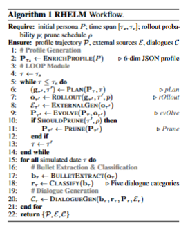
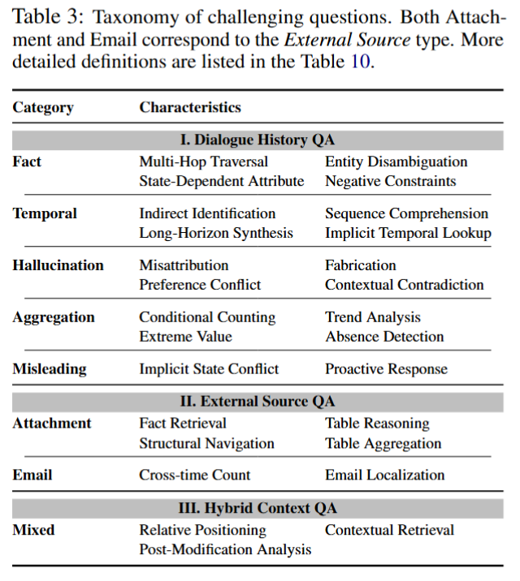
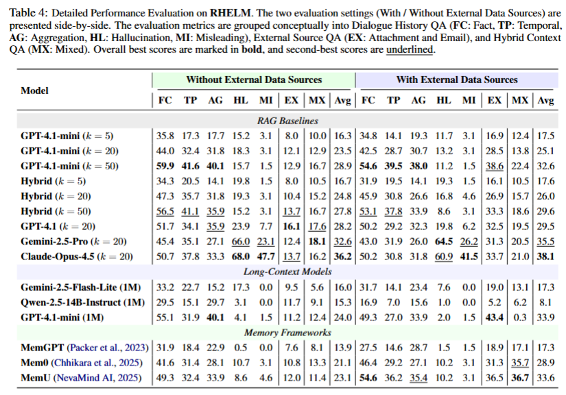
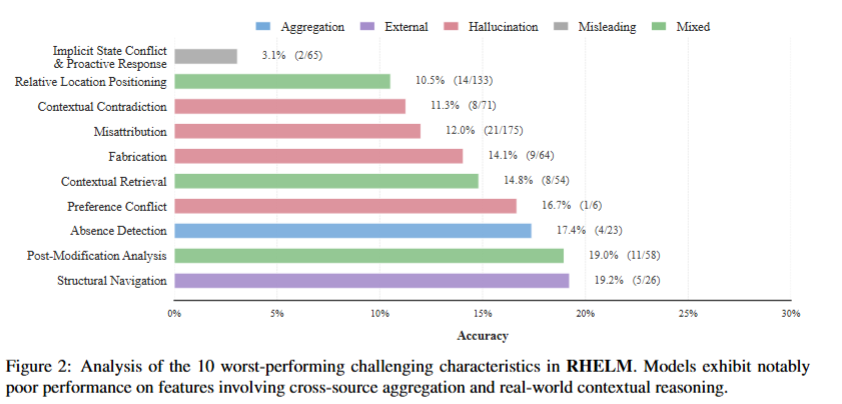
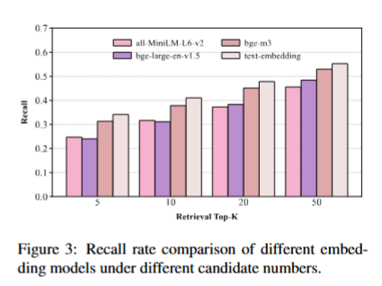

| Item | Count |
|---|---|
| Characters (personas) | 10 |
| QA pairs | 1,305 |
| Conversation sessions | 629 |
| Emails | 625 |
| Attachments | 1,053 |
RHELM is a comprehensive benchmark for evaluating long-horizon memory capabilities in AI systems. Unlike existing benchmarks built around static dialogues, RHELM introduces realistic, heterogeneous, and evolving memory challenges that better reflect real-world assistant scenarios. It pairs multi-source memory (conversations, emails, attachments) with questions requiring multi-hop reasoning, temporal synthesis, preference tracking, and hallucination detection. All characters, events, and personal details are fully synthetic.
RHELM is generated by an iterative pipeline that enriches a persona profile, simulates evolving timelines, and produces multi-source memory together with challenging QA pairs across five dialogue categories.

| Item | Count |
|---|---|
| Characters (personas) | 10 |
| QA pairs | 1,305 |
| Conversation sessions | 629 |
| Emails | 625 |
| Attachments | 1,053 |
| Question Type | Count |
|---|---|
| attachment | 249 |
| mixed | 210 |
| fact | 207 |
| hallucination | 197 |
| aggregation | 192 |
| temporal | 185 |
| misleading | 65 |
RHELM organizes questions into 7 categories with 26 challenge characteristics across three QA domains: Dialogue History QA, External Source QA, and Hybrid Context QA. These cover multi-hop traversal, state-dependent attributes, temporal synthesis, memory-conditioned misleading queries, and more.

We evaluate RAG baselines, long-context models, and dedicated memory frameworks, each under two settings: with and without external data sources. Even the strongest systems struggle with cross-source aggregation and hybrid-context reasoning.



Each QA file is in JSON Lines format — one JSON object per question–answer pair:
{
"id": "fact_19130b",
"question": "... what did I actually have for my first meal of the day?",
"answer": "Leftover lentil soup",
"question_date": "2024-10-28",
"question_type": "fact",
"supporting_evidence": ["2024-05-26:5"],
"characteristics": ["State-Dependent Attribute"]
}
supporting_evidence uses the form
"<session-date>:<turn-index>" for conversation evidence
(e.g. turn 5 of the 2024-05-26 session), or a file/section reference for attachments.
@article{rhelm2026,
title = {Beyond Static Dialogues: Benchmarking Realistic, Heterogeneous, and Evolving Long-Horizon Memory},
author = {Han Zhang and Zihao Tang and Xin Yu and Xiao Liu and Yeyun Gong and Haizhen Huang and Yan Lu and Weiwei Deng and Feng Sun and Qi Zhang and Hanfang Yang},
journal = {arXiv preprint arXiv:2605.31086},
year = {2026}
}